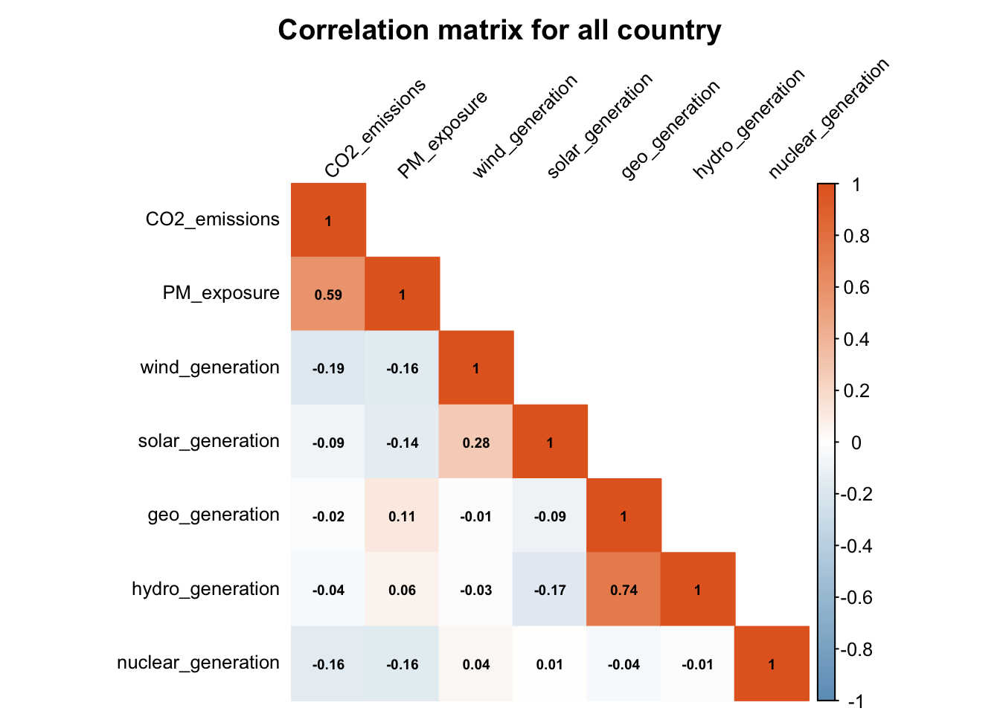
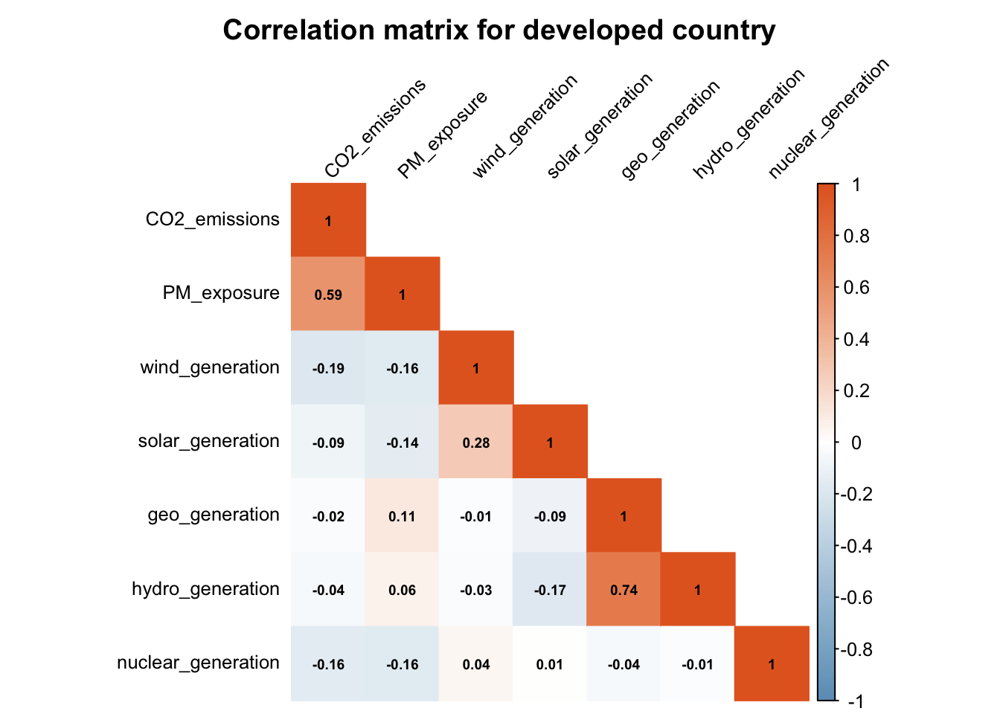
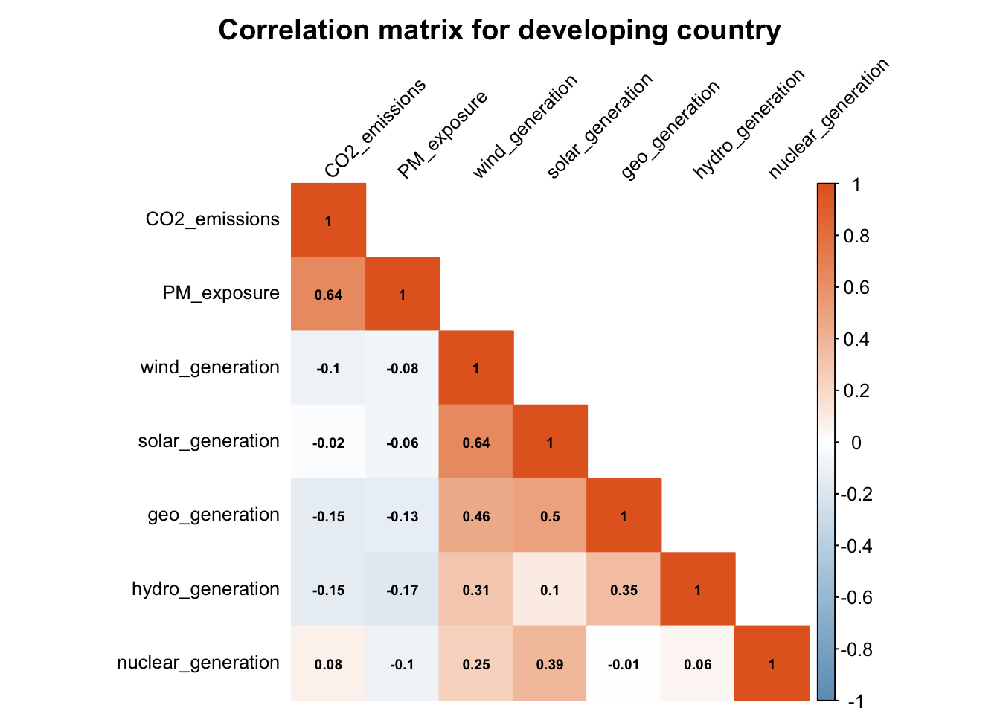
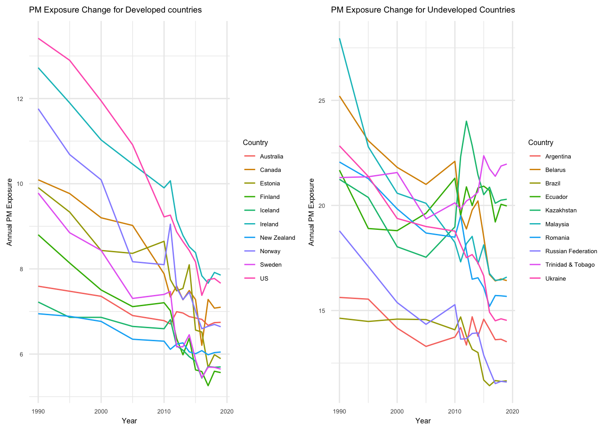
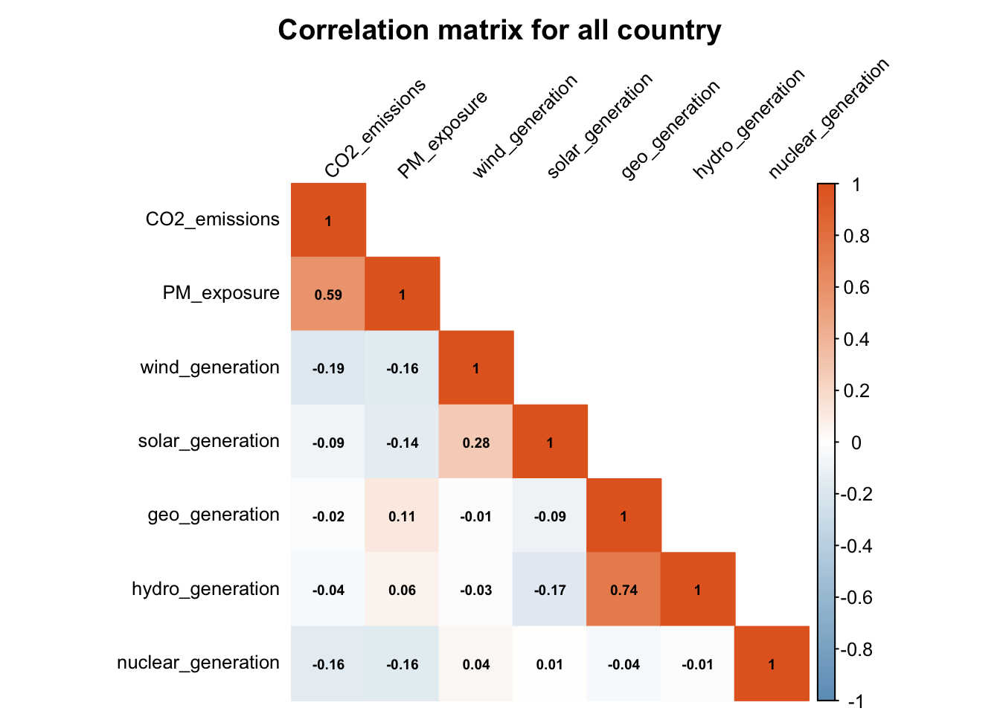
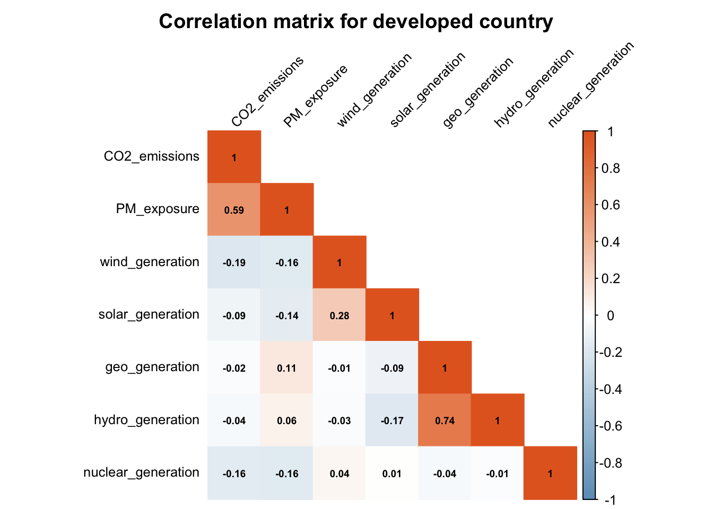
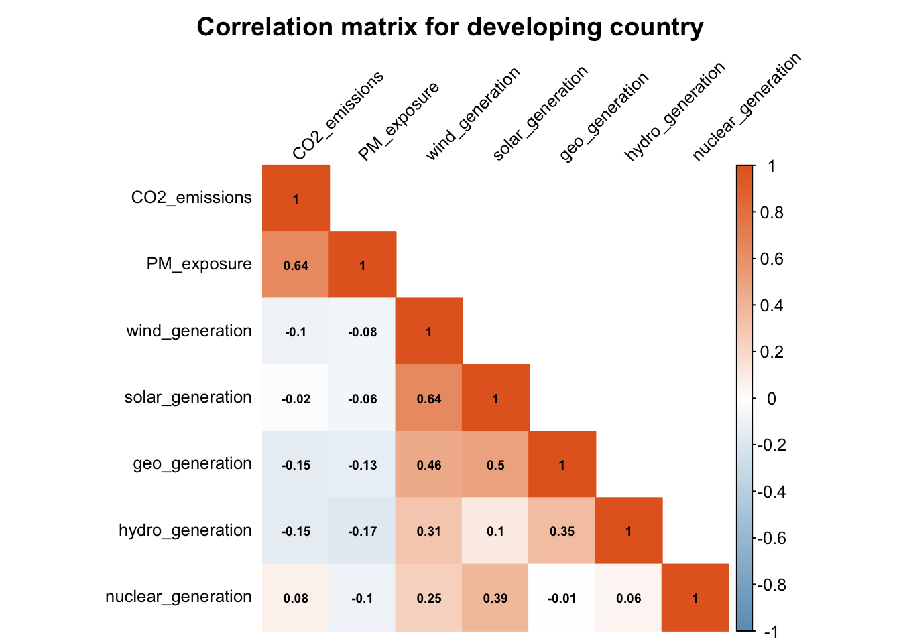
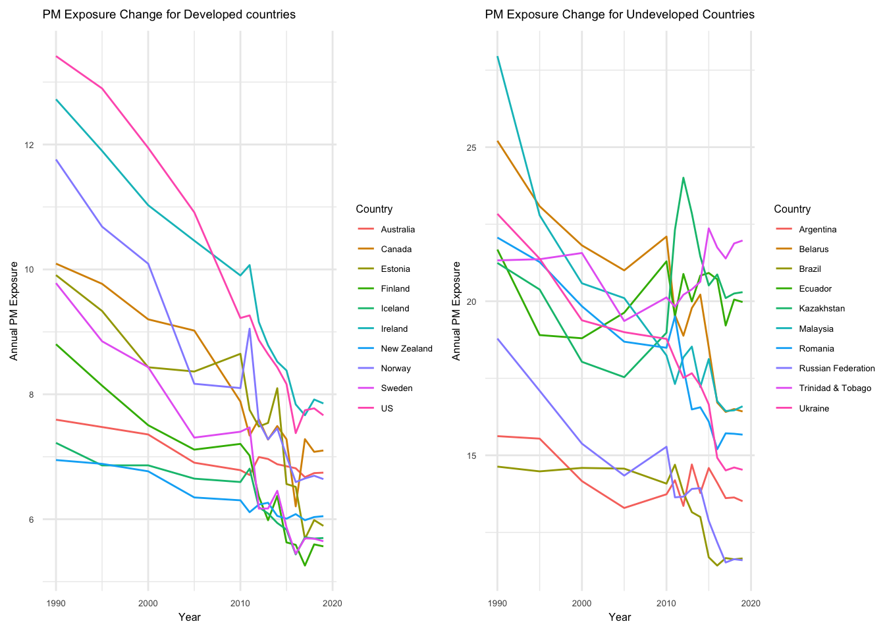

Embarking on the analysis phase, we move beyond basic and multivariate comparisons to delve into the intricacies of our dataset. Visual trends have highlighted a global transition to sustainable energy sources, propelled by a blend of environmental awareness, policy incentives, and technological advancements. While the initial years emphasized hydroelectric dominance, subsequent decades saw the rise of nuclear, solar, and wind amid a continuous growth in emissions. Now, our focus shifts to a nuanced exploration of the evolving relationship between renewable energy, CO2 emissions, and air quality. Our aim is to unravel any complexities and unveil insights into the dynamic interplay, providing a deeper understanding of the forces shaping our sustainable energy landscape.
In scrutinizing the Correlation Matrix detailed in section 3.1.3, a preliminary observation unfolded: renewable sources exhibit varying degrees of negative correlation with CO2 emissions. Specifically possessing the following correlation values, Wind (-0.188), Solar (-0.089), Geo (-0.025), Hydro (-0.04), and Nuclear (-0.156). Wind and Nuclear stand out as statistically significant contributors to this relationship. Despite these findings, the magnitudes of these correlations are somewhat modest, leaving room for deeper exploration.
Our quest for understanding the intricate relationship between CO2 emissions and renewables persists. Analysis in section 3.4.1, “Comparing Renewable Generation and CO2,” reveals a nuanced narrative. Contrary to expectations, an increase in renewable energy production coincides with higher CO2 emissions. Noteworthy anomalies, represented by small wealthy nations, challenge the general trend by either surpassing their expected CO2 per capita estimate or exhibiting elevated renewable energy production per capita.
To address our first research question of “To what extent does sustainable energy generation impact carbon dioxide emissions?”, we began by constructing a basic multiple linear regression model using raw_df, transforming all values into logarithmic scales for both total emissions and total renewable energy generated by each country.
\[logCO2 = {\beta}_0 + logwind{\beta}_1 + logsolar{\beta}_2 + loggeo{\beta}_3 + loghydro{\beta}_4+ lognuclear{\beta}_5 + \epsilon\]
| Dependent variable: | |
| log_CO2 | |
| log_wind | 0.025** |
| (0.012) | |
| log_solar | -0.014 |
| (0.010) | |
| log_geo | 0.108*** |
| (0.015) | |
| log_hydro | 0.215*** |
| (0.010) | |
| log_nuclear | 0.341*** |
| (0.014) | |
| Constant | 17.600*** |
| (0.029) | |
| Observations | 3,250 |
| R2 | 0.390 |
| Adjusted R2 | 0.389 |
| Residual Std. Error | 1.240 (df = 3244) |
| F Statistic | 416.000*** (df = 5; 3244) |
| Note: | p<0.1; p<0.05; p<0.01 |
At a glance of our basic model notable insights emerge. The pivotal p-values linked to each variable offer valuable interpretive cues. Wind, geothermal, hydro, and nuclear energies exhibit p-values below 0.05, indicating statistical significance in their relationship with CO2 emissions. However, solar energy’s p-value surpasses this threshold, suggesting a non-significant impact on CO2 emissions within this model.
Intriguingly, we need to consider the positive correlation reflected in all coefficients with significant p-values, particularly noteworthy in the cases of Hydro and Nuclear energies, strongly influencing the rate of CO2 change. The marginal associations of Wind and Solar energy may find explanation in their emergence as globally prevalent renewable sources, gaining prominence since the turn of the century.
While the model’s R-squared value of approximately 39% implies potential explanatory power, reservations linger. We remain cautious about inferring causation from this model alone. Despite its ability to provide a substantial portion of the relationship between renewable energy and CO2 emissions, the broader socio-economic context plays a pivotal role. Our society’s continual quest for production and economic expansion inherently accompanies an increase in CO2 emissions. Simultaneously, the integration of new technologies, including renewable energies, further complicates the intricate relationship between environmental factors and human activities.
The fixed time effect model is a robust approach for our dataset, accounting for time-specific variations across the observed years. This model is particularly apt when we anticipate and want to control for potential time-dependent factors that could influence the relationship between renewable energy variables and CO2 emissions. The ‘Within Model’ specification implies that individual country-specific effects are removed, isolating the time-specific changes and offering a more focused examination of the impact of renewable energy sources.
| Dependent variable: | |
| log_CO2 | |
| log_wind | 0.029** |
| (0.012) | |
| log_solar | 0.008 |
| (0.011) | |
| log_geo | 0.109*** |
| (0.015) | |
| log_hydro | 0.215*** |
| (0.010) | |
| log_nuclear | 0.311*** |
| (0.014) | |
| Observations | 3,250 |
| R2 | 0.364 |
| Adjusted R2 | 0.355 |
| F Statistic | 367.000*** (df = 5; 3200) |
| Note: | p<0.1; p<0.05; p<0.01 |
In delving into the results of the new model, several familiar insights emerge. Somewhat noteworthy is that, all renewable energy sources, except solar, again exhibit statistically significant effects on CO2 emissions. Wind, geothermal, hydro, and nuclear energies showcase coefficients with p-values less than 0.05, indicating significant impact.
Hydro and nuclear energies continue to display positive correlations with CO2 emissions, while wind energy demonstrates a positive albeit smaller effect. These results mirror our previous model’s findings, emphasizing the intricate dynamics within the renewable energy landscape. The model’s comparatively reduced R-squared value of approximately 36.4% still indicates a substantial portion of the variance in CO2 emissions is explained by the included variables.
Having found what we believe to be the most suitable model of a fixed time effect, we need to assess the data we were using and its relevance. In particular, for results pertaining to Solar and Wind Generation. Opting for the raw_1990 dataset over the broader raw_df offers several advantages for our analysis. Focusing on data from 1990 onwards allows for a more recent examination of the relationship between renewable energy generation and CO2 emissions.By narrowing the timeframe, we ensure that the data captures more relevant and representative information regarding the current state of various energy sources. Additionally, limiting the scope to post-1990 data facilitates a more consistent and comparable analysis across countries and energy types, aligning with a period marked by increased global attention to sustainable practices and greater advancements in renewable energy technologies. Overall, the raw_1990 dataset provides a refined lens through which we can discern the dynamics of renewable energy’s impact on CO2 emissions.
| Dependent variable: | |
| log_CO2 | |
| log_wind | 0.039*** |
| (0.011) | |
| log_solar | 0.009 |
| (0.010) | |
| log_geo | 0.097*** |
| (0.015) | |
| log_hydro | 0.175*** |
| (0.012) | |
| log_nuclear | 0.305*** |
| (0.015) | |
| Observations | 2,002 |
| R2 | 0.413 |
| Adjusted R2 | 0.404 |
| F Statistic | 277.000*** (df = 5; 1971) |
| Note: | p<0.1; p<0.05; p<0.01 |
log_wind: For a one-unit increase in the natural logarithm of wind energy generation, the natural logarithm of CO2 emissions is estimated to increase by approximately 0.0395 units. This positive coefficient suggests that higher wind energy generation is associated with an increase in CO2 emissions.
log_solar: For a one-unit increase in the natural logarithm of solar energy generation, the natural logarithm of CO2 emissions is estimated to increase by approximately 0.0087 units. Similar to wind, this positive coefficient implies that increased solar energy generation is associated with a slight increase in CO2 emissions, though the effect is smaller.
log_geo: For a one-unit increase in the natural logarithm of geothermal energy generation, the natural logarithm of CO2 emissions is estimated to increase by approximately 0.0972 units. This positive coefficient suggests that higher geothermal energy generation is associated with an increase in CO2 emissions.
log_hydro: For a one-unit increase in the natural logarithm of hydro energy generation, the natural logarithm of CO2 emissions is estimated to increase by approximately 0.1746 units. This positive coefficient implies that increased hydro energy generation is associated with a notable increase in CO2 emissions.
log_nuclear: For a one-unit increase in the natural logarithm of nuclear energy generation, the natural logarithm of CO2 emissions is estimated to increase by approximately 0.3054 units. This positive coefficient suggests that higher nuclear energy generation is associated with a substantial increase in CO2 emissions.
The analysis, conducted using a fixed-effects model, reveals that sustainable energy generation has a substantial impact on carbon dioxide emissions. The overall model, with an R-squared value of approximately 41.3%, indicates that around 41.3% of the variation in CO2 emissions can be explained by the included sustainable energy variables of, wind, solar, geothermal, hydro, and nuclear energies. This suggests a strong connection between the adoption of these sustainable energy sources and the increase in carbon dioxide emissions.
The observation that increasing renewable energy generation is associated with increased CO2 emissions in our model might seem counterintuitive at first glance, but several factors could contribute to this phenomenon:
Infrastructure Development: The initial stages of adopting renewable energy often involve significant infrastructure development, which can be energy-intensive and may rely on conventional energy sources. The manufacturing, installation, and setup of renewable energy facilities, such as wind farms, solar arrays, nuclear power plants, and dams, can significantly contribute to CO2 emissions.
Economic Growth: Increased adoption of renewable energy is occurring simultaneously with economic growth. As economies expand, there is often a rise in energy demand, leading to increased overall energy production, including both renewable and non-renewable sources.
Global Supply Chain: The global supply chain for renewable technologies involves transportation and manufacturing processes that contribute to CO2 emissions. The extraction of raw materials for renewable technologies also has environmental impacts.
Lag in Emission Reduction: The transition to renewable energy is a process, and the full benefits in terms of reduced CO2 emissions might take time to materialize. During the transition, there may be a period where the growth in renewable energy is still accompanied by the use of conventional energy sources.
It’s essential to consider these nuances and contextual factors when interpreting the relationship between renewable energy generation and CO2 emissions. As renewable energy infrastructure becomes more established and technology improves, we may see reductions in CO2 emissions.
Continuing with our analysis, we needed to investigate the effects of renewable energy on improving air quality in countries transitioning to cleaner sources of energy. In this model, we opted not to take the logarithm of the energy sources and PM2.5 exposure. The decision was made to maintain the original scale, facilitating a better interpretation of the coefficients.raw_1990 remained as the dataset for the model and this decision was based on the fact that all our data for PM_exposure is available post-1990. Additionally, we continued employing the fixed-effects model for our analysis.
| Dependent variable: | |
| PM_exposure | |
| wind_generation | 0.148*** |
| (0.044) | |
| solar_generation | -0.044 |
| (0.085) | |
| geo_generation | -0.287*** |
| (0.079) | |
| hydro_generation | 0.012** |
| (0.006) | |
| nuclear_generation | -0.030*** |
| (0.007) | |
| Observations | 1,078 |
| R2 | 0.056 |
| Adjusted R2 | 0.040 |
| F Statistic | 12.500*** (df = 5; 1059) |
| Note: | p<0.1; p<0.05; p<0.01 |
wind_generation: A one-unit increase in wind energy generation is associated with a 0.1478-unit increase in PM2.5 exposure. This suggests that higher wind energy generation is linked to a moderate increase in PM2.5 exposure.
solar_generation: The coefficient for solar generation is -0.0440, indicating a slight negative association. However, it is not statistically significant (p-value = 0.605), suggesting that solar energy generation might not have a substantial impact on PM2.5 exposure in this model.
geo_generation: A one-unit increase in geothermal energy generation is associated with a 0.2872-unit decrease in PM2.5 exposure. This implies that higher geothermal energy generation is linked to a reduction in PM2.5 exposure.
hydro_generation: A one-unit increase in hydro energy generation is associated with a 0.0122-unit increase in PM2.5 exposure. This coefficient is statistically significant (p-value = 0.049), suggesting a modest positive association between hydro energy generation and PM2.5 exposure.
nuclear_generation: A one-unit increase in nuclear energy generation is associated with a 0.0303-unit decrease in PM2.5 exposure. This coefficient is statistically significant (p-value < 0.001), indicating that higher nuclear energy generation is linked to a reduction in PM2.5 exposure.
The R-squared value of 0.0557 suggests that the included energy generation variables explain about 5.57% of the variation in PM2.5 exposure. A low R-squared value could be attributed to several factors:
Missing Variables: There are clearly many unaccounted-for factors influencing PM2.5 exposure that are not included in our model.
Complexity of PM2.5 Formation: PM2.5 is influenced by various sources, including industrial activities, traffic, and meteorological conditions. The model does not capture the full complexity of these interactions.
Spatial and Temporal Variability: PM2.5 levels can vary significantly across different regions within countries. A fixed-effects model with specification only to the country level may not fully capture this variability.
While the R-squared value is low, the individual coefficients possibly provide valuable insights into the specific impacts of each energy generation type on PM2.5 exposure in your dataset. Further exploration and consideration of additional factors may enhance the model’s explanatory capacity.
To what extent does sustainable energy generation impact carbon dioxide emissions? 2. What are the key factors and types of sustainable energy sources that have the most significant impact on reducing CO2 emissions? 3. How does sustainable energy generation impact the quality of air (reduction of PM 2.5)? 4. Is there a temporal trend between the growth of sustainable energy generation and the reduction in CO2 emissions and what implications does this trend hold for future sustainability efforts?